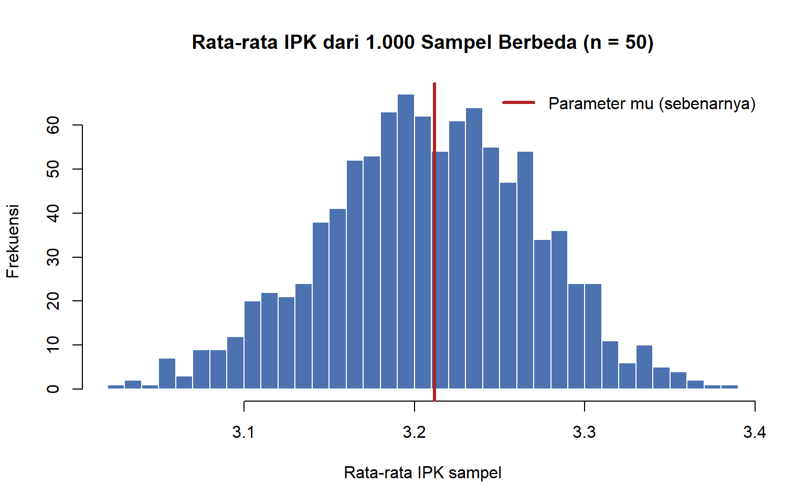
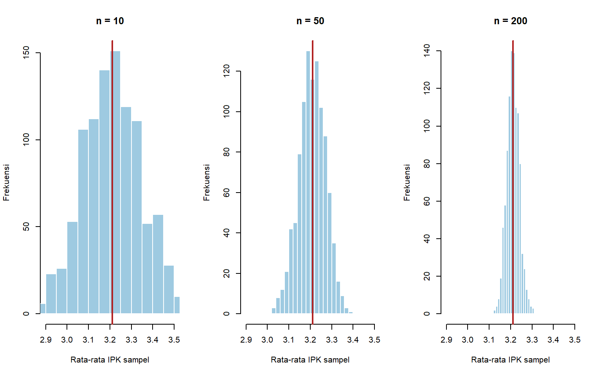
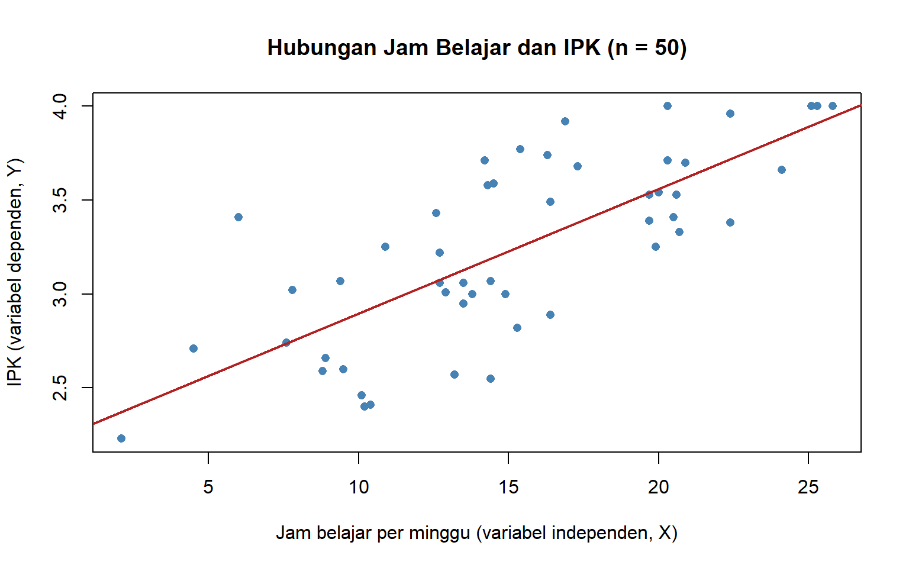
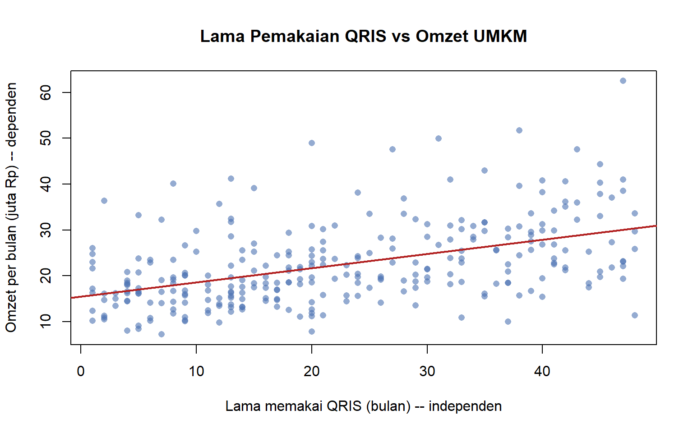
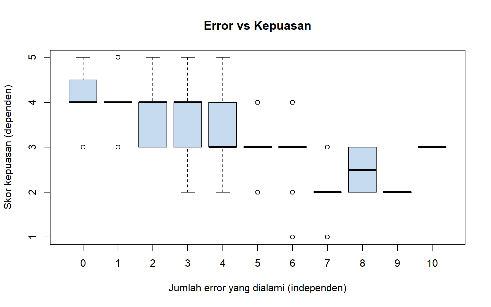
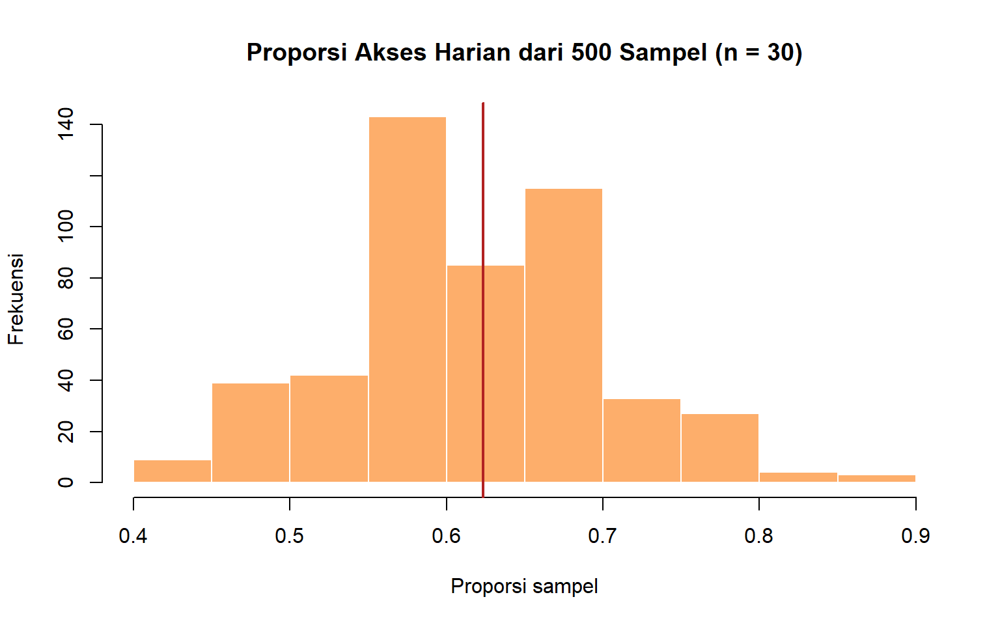

Introduction to Statistics (SDT-1102)
Practicum 1: Konsep Dasar Statistika dan Data

Abyan Fathin Pradafi
Mahasiswa Institut Teknologi Sains Bandung prodi Data Science yang tertarik pada bidang Data Analyst. Memiliki rasa ingin tahu tinggi terhadap ekosistem IT dari POV Development, IT Support, hingga IT Infrastructure.
1 Mengenal R Secara Singkat
Sepanjang semester kita memakai R sebagai “kalkulator statistika”. Bagian ini hanya membekali perintah minimal yang dibutuhkan pada pertemuan ini.
1.1 Vektor: Kumpulan Nilai Sejenis
Vektor dibuat dengan fungsi c() (combine). Satu vektor biasanya mewakili satu variabel.
tinggi <- c(160, 172, 168, 155, 181)
prodi <- c("DS", "SI", "DS", "TI", "DS")
lulus <- c(TRUE, TRUE, FALSE, TRUE, TRUE)
length(tinggi)## [1] 5## [1] 172## [1] 1.60 1.72 1.68 1.55 1.81## [1] "numeric"## [1] "character"## [1] "logical"1.2 Data Frame: Tabel Data
Data frame adalah tabel: baris = observasi, kolom = variabel. Inilah bentuk data yang paling sering kita jumpai.
mhs_kecil <- data.frame(
nama = c("Ayu", "Budi", "Citra", "Dedi", "Eka"),
prodi = prodi,
tinggi = tinggi,
lulus = lulus
)
print(mhs_kecil)## nama prodi tinggi lulus
## 1 Ayu DS 160 TRUE
## 2 Budi SI 172 TRUE
## 3 Citra DS 168 FALSE
## 4 Dedi TI 155 TRUE
## 5 Eka DS 181 TRUE## [1] 5## [1] 4## [1] 160 172 168 155 181## 'data.frame': 5 obs. of 4 variables:
## $ nama : chr "Ayu" "Budi" "Citra" "Dedi" ...
## $ prodi : chr "DS" "SI" "DS" "TI" ...
## $ tinggi: num 160 172 168 155 181
## $ lulus : logi TRUE TRUE FALSE TRUE TRUEFungsi str() akan sering kita pakai untuk “berkenalan” dengan dataset baru: berapa observasinya, apa saja variabelnya, dan apa tipenya.
2 Fundamental Statistika
2.1 Statistika vs Statistik
Dua kata ini mirip tetapi maknanya berbeda:| Istilah | Makna | Contoh |
|---|---|---|
| Statistika (statistics sebagai ilmu) | Ilmu tentang cara mengumpulkan, mengolah, menyajikan, menganalisis, dan menginterpretasikan data untuk menarik kesimpulan dalam kondisi ketidakpastian | “Saya sedang belajar statistika.” |
| Statistik (a statistic) | Nilai ringkasan yang dihitung dari data sampel | “Rata-rata tinggi 5 mahasiswa tadi adalah 167,2 cm.” |
Dalam bahasa sehari-hari, “statistik” juga sering berarti “kumpulan angka” (misalnya “statistik pengangguran”). Dalam kuliah ini kita memakai makna teknisnya: nilai yang dihitung dari sampel.
## [1] 167.2## [1] 0.82.2 Siklus Kerja Statistika
Statistika bukan sekadar menghitung rumus. Ia adalah sebuah siklus:| Tahap | Pertanyaan yang dijawab | Dibahas pada |
|---|---|---|
|
Apa yang ingin diketahui? Tentang siapa? |
Pertemuan 1 |
|
Bagaimana data diperoleh? Siapa yang diamati? |
Pertemuan 2–3 |
|
Seperti apa pola datanya? | Pertemuan 4–7 |
|
Apa yang bisa dikatakan tentang populasi? |
Pertemuan 9–15 |
|
Bagaimana melaporkan hasil secara jujur? |
Sepanjang semester |
2.3 Statistika Deskriptif vs Inferensial
| Aspek | Statistika Deskriptif | Statistika Inferensial |
|---|---|---|
| Tujuan | Meringkas dan menggambarkan data yang ada di tangan | Menarik kesimpulan tentang populasi berdasarkan sampel |
| Cakupan kesimpulan | Hanya berlaku untuk data yang diamati | Digeneralisasi ke kelompok yang lebih besar |
| Alat | Tabel, grafik, mean, median, simpangan baku | Estimasi, selang kepercayaan, uji hipotesis, regresi |
| Ketidakpastian | Tidak dinyatakan | Selalu dinyatakan (misalnya margin of error, p-value) |
| Contoh kalimat | “Rata-rata IPK 50 mahasiswa yang disurvei adalah 3,21.” | “Rata-rata IPK seluruh mahasiswa diperkirakan antara 3,13 dan 3,29 (kepercayaan 95%).” |
Perhatikan perbedaan kalimatnya: kalimat deskriptif hanya melaporkan, sedangkan kalimat in- 6 ferensial menggeneralisasi dan menyebutkan ketidakpastian. Pada paruh pertama semester (Pertemuan 1–7) kita fokus pada statistika deskriptif; paruh kedua (Pertemuan 9–15) pada inferen- sial.
3 Populasi dan Sampel
3.1 Definisi Kunci
| Istilah | Definisi | Contoh (Survei Kebiasaan Belajar) |
|---|---|---|
| Populasi | Seluruh objek/individu yang menjadi sasaran kesimpulan | Seluruh 5.000 mahasiswa aktif sebuah universitas |
| Sampel | Sebagian populasi yang benar-benar diamati | 50 mahasiswa yang mengisi survei |
| Unit observasi | Satu “entitas” tempat data dicatat (satu baris data) | Satu orang mahasiswa |
| Parameter | Nilai ringkasan populasi (biasanya tidak diketahui) | Rata-rata IPK seluruh mahasiswa, μ |
| Statistik | Nilai ringkasan sampel (dapat dihitung) | Rata-rata IPK 50 mahasiswa, x̄ |
Cara mudah mengingat: Parameter - Populasi; Statistik - Sampel.
3.2 Mengapa Tidak Mengamati Seluruh Populasi?
Mengamati seluruh populasi disebut sensus. Sensus ideal, tetapi sering tidak mungkin atau tidak efisien karena:
- Biaya dan waktu – mensurvei 270 juta penduduk Indonesia hanya dilakukan BPS setiap 10 tahun.
- Populasi tak terhingga atau terus berubah – misalnya seluruh transaksi QRIS di masa depan.
- Pengamatan bersifat merusak – menguji umur lampu atau kekuatan beton berarti menghancurkannya; menguji seluruh produksi berarti tidak ada yang tersisa untuk dijual.
- Sampel yang dirancang baik sudah cukup akurat – dan sering lebih teliti karena petugasnya lebih sedikit dan terlatih.
3.3 Simulasi: Populasi yang (Pura-pura) Kita Ketahui
Di dunia nyata parameter populasi tidak diketahui. Agar dapat melihat hubungan parameter dan statistik, kita menyimulasikan sebuah populasi 5.000 mahasiswa, sehingga – khusus di praktikum ini – kita tahu “kebenarannya”.
set.seed(2026)
N <- 5000
populasi <- data.frame(
id = 1:N,
fakultas = sample(c("Teknik", "Ekonomi", "Sains", "Hukum", "Kedokteran"), N,
replace = TRUE, prob = c(0.30, 0.25, 0.20, 0.15, 0.10)),
jenis_kel = sample(c("Perempuan", "Laki-laki"), N, replace = TRUE),
tinggal = sample(c("Kos", "Rumah Ortu", "Asrama"), N, replace = TRUE,
prob = c(0.55, 0.35, 0.10)),
jam_belajar = round(pmax(0, rnorm(N, mean = 14, sd = 5)), 1) # jam per minggu
)
# IPK dipengaruhi jam belajar ditambah faktor acak lain
populasi$ipk <- round(pmin(4, pmax(1.5, 2.3 + 0.065 * populasi$jam_belajar +
rnorm(N, 0, 0.3))), 2)
populasi$uang_saku <- round(rlnorm(N, meanlog = log(2), sdlog = 0.4), 2) # juta rupiah/bulan
head(populasi)Parameter populasi (dalam kenyataan tidak kita ketahui):
mu <- mean(populasi$ipk) # rata-rata IPK populasi
p_kos <- mean(populasi$tinggal == "Kos") # proporsi mahasiswa kos
c(mu = mu, p_kos = p_kos)## mu p_kos
## 3.211766 0.5542003.4 Mengambil Sampel dan Menghitung Statistik
Sekarang kita berperan sebagai peneliti yang hanya mampu mensurvei 50 mahasiswa yang dipilih secara acak.
set.seed(1)
n <- 50
sampel <- populasi[sample(1:N, n), ]
x_bar <- mean(sampel$ipk)
p_hat <- mean(sampel$tinggal == "Kos")knitr::kable(data.frame(
Ukuran = c("Rata-rata IPK", "Proporsi tinggal di kos"),
Parameter = round(c(mu, p_kos), 3),
Statistik = round(c(x_bar, p_hat), 3),
Selisih = round(c(x_bar - mu, p_hat - p_kos), 3)
), caption = "Parameter populasi vs statistik dari satu sampel (n = 50)")| Ukuran | Parameter | Statistik | Selisih |
|---|---|---|---|
| Rata-rata IPK | 3.212 | 3.241 | 0.029 |
| Proporsi tinggal di kos | 0.554 | 0.620 | 0.066 |
Statistik sampel dekat dengan parameter, tetapi tidak sama persis. Selisih ini disebut kesalahan sampling (sampling error) – bukan karena peneliti ceroboh, melainkan karena kita hanya melihat sebagian populasi.
3.5 Unit Observasi Bisa Berubah
Unit observasi ditentukan oleh tingkat di mana data dicatat. Data mahasiswa di atas memiliki unit observasi “satu mahasiswa”. Jika data tersebut diringkas per fakultas, unit observasinya berubah menjadi “satu fakultas”:
per_fakultas <- aggregate(cbind(ipk, jam_belajar) ~ fakultas, data = populasi, FUN = mean)
per_fakultas$jumlah_mhs <- as.numeric(table(populasi$fakultas)[per_fakultas$fakultas])
knitr::kable(per_fakultas, digits = 2, caption = "Data dengan unit observasi = fakultas 5 baris)")| fakultas | ipk | jam_belajar | jumlah_mhs |
|---|---|---|---|
| Ekonomi | 3.21 | 13.86 | 1263 |
| Hukum | 3.21 | 14.14 | 725 |
| Kedokteran | 3.22 | 14.26 | 488 |
| Sains | 3.21 | 14.05 | 1023 |
| Teknik | 3.22 | 14.11 | 1501 |
Tabel kedua hanya memiliki 5 baris. Kesimpulan dari data tingkat fakultas tidak otomatis berlaku untuk tingkat individu – kesalahan logika ini dikenal sebagai ecological fallacy. Selalu tanyakan: “satu baris data ini mewakili apa?”
4 Variabilitas Sampling: Statistik Itu Berubah-ubah
Jika peneliti lain mengambil sampel 50 mahasiswa yang berbeda, apakah ia memperoleh ̄𝑥 yang sama? Mari kita ulangi pengambilan sampel sebanyak 1.000 kali.
set.seed(2)
rata_sampel_50 <- replicate(1000, mean(sample(populasi$ipk, 50)))
hist(rata_sampel_50, breaks = 30, col = "#4C72B0", border = "white",
main = "Rata-rata IPK dari 1.000 Sampel Berbeda (n = 50)",
xlab = "Rata-rata IPK sampel", ylab = "Frekuensi")
abline(v = mu, col = "firebrick", lwd = 3)
legend("topright", legend = "Parameter mu (sebenarnya)", col = "firebrick", lwd = 3, bty = "n")
## [1] 3.0284 3.3844Setiap sampel menghasilkan ̄𝑥 yang berbeda, tetapi nilai-nilainya berkumpul di sekitar 𝜇. Inilah alasan statistika inferensial selalu menyertakan ukuran ketidakpastian. Pengaruh ukuran sampel. Apa yang terjadi jika sampel diperbesar?
set.seed(3)
rata_sampel_10 <- replicate(1000, mean(sample(populasi$ipk, 10)))
rata_sampel_200 <- replicate(1000, mean(sample(populasi$ipk, 200)))
par(mfrow = c(1, 3))
for (hasil in list(list(rata_sampel_10, "n = 10"), list(rata_sampel_50, "n = 50"),
list(rata_sampel_200, "n = 200"))) {
hist(hasil[[1]], breaks = 25, xlim = c(2.9, 3.5), col = "#9ecae1", border = "white",
main = hasil[[2]], xlab = "Rata-rata IPK sampel", ylab = "Frekuensi")
abline(v = mu, col = "firebrick", lwd = 2)
}
par(mfrow = c(1, 1))
round(c(Sebaran_n10 = sd(rata_sampel_10), Sebaran_n50 = sd(rata_sampel_50),
Sebaran_n200 = sd(rata_sampel_200)), 4)## Sebaran_n10 Sebaran_n50 Sebaran_n200
## 0.1358 0.0615 0.0292Semakin besar sampel, semakin sempit sebaran ̄𝑥 di sekitar 𝜇 – statistik semakin dapat dipercaya. Ide ini akan dibahas secara formal pada Pertemuan 9 (sampling distribution dan Central Limit Theorem).
4.1 Sekilas Inferensi
Sebagai pratinjau, statistika inferensial memungkinkan kita menyatakan: “berdasarkan satu sampel ini, 𝜇 kemungkinan besar berada di antara … dan …”.
se <- sd(sampel$ipk) / sqrt(n)
selang <- c(Bawah = x_bar - 2 * se, Atas = x_bar + 2 * se)
round(selang, 3)## Bawah Atas
## 3.102 3.380## Bawah
## TRUERumus di atas belum perlu dihafal; yang penting adalah idenya: kesimpulan tentang populasi dinyatakan sebagai rentang beserta tingkat kepercayaannya, bukan satu angka pasti.
5 Variabel
Variabel adalah karakteristik yang nilainya bervariasi antarunit observasi. Dalam data frame, setiap kolom adalah satu variabel.
5.1 Variabel Numerik vs Kategorik
| Jenis | Ciri | Contoh | Tipe di R |
|---|---|---|---|
| Numerik (kuantitatif) |
Nilainya angka yang bermakna untuk dihitung (dijumlah, dirata-rata) | IPK, jam belajar, uang saku, tinggi badan | numeric, integer |
| Kategorik (kualitatif) |
Nilainya label/kelompok | Fakultas, jenis kelamin, tempat tinggal | character, factor |
Jebakan penting: tidak semua yang ditulis dengan angka adalah variabel numerik. NIM, kode pos, nomor HP, atau kode fakultas “1, 2, 3” adalah kategorik, karena merata-ratakannya tidak bermakna.
## 'data.frame': 50 obs. of 7 variables:
## $ id : int 1017 4775 2177 1533 4567 2347 270 4050 3379 4065 ...
## $ fakultas : chr "Ekonomi" "Ekonomi" "Sains" "Ekonomi" ...
## $ jenis_kel : chr "Perempuan" "Laki-laki" "Laki-laki" "Perempuan" ...
## $ tinggal : chr "Kos" "Kos" "Asrama" "Kos" ...
## $ jam_belajar: num 20.6 19.7 15.4 24.1 19.9 8.8 25.3 14.4 10.1 19.7 ...
## $ ipk : num 3.53 3.39 3.77 3.66 3.25 2.59 4 2.55 2.46 3.53 ...
## $ uang_saku : num 2.94 3.7 2.5 2.61 2.47 1.36 2.28 4.9 2.27 1.28 ...jenis_variabel <- function(x) if (is.numeric(x)) "Numerik" else "Kategorik"
sapply(sampel, jenis_variabel)## id fakultas jenis_kel tinggal jam_belajar ipk
## "Numerik" "Kategorik" "Kategorik" "Kategorik" "Numerik" "Numerik"
## uang_saku
## "Numerik"Menurut R, kolom id bertipe numerik – padahal secara makna id hanyalah label unit observasi. R hanya melihat tipe penyimpanan, sedangkan menentukan jenis variabel adalah tugas analis 13 berdasarkan makna.
## [1] 2248.94##
## Ekonomi Hukum Kedokteran Sains Teknik
## 19 6 1 16 8## Min. 1st Qu. Median Mean 3rd Qu. Max.
## 2.10 11.32 14.45 15.19 19.98 25.80Pembagian numerik menjadi diskrit/kontinu dan kategorik menjadi nominal/ordinal akan dibahas lebih rinci pada Pertemuan 2.
5.2 Variabel Independen vs Dependen
Ketika sebuah studi menyelidiki hubungan antarvariabel, peran variabel dibedakan:
| Peran | Nama lain | Makna | Contoh |
|---|---|---|---|
| Independen | Variabel bebas, prediktor, feature, \(X\) | Variabel yang diduga memengaruhi | Jam belajar per minggu |
| Dependen | Variabel terikat, respons, target, \(Y\) | Variabel yang diduga dipengaruhi | IPK |
plot(sampel$jam_belajar, sampel$ipk, pch = 16, col = "steelblue",
xlab = "Jam belajar per minggu (variabel independen, X)",
ylab = "IPK (variabel dependen, Y)",
main = "Hubungan Jam Belajar dan IPK (n = 50)")
abline(lm(ipk ~ jam_belajar, data = sampel), col = "firebrick", lwd = 2)
Secara umum, mahasiswa yang belajar lebih lama cenderung memiliki IPK lebih tinggi. Konvensi grafiknya: variabel independen di sumbu-x, dependen di sumbu-y. Hubungan ini akan diukur secara formal pada Pertemuan 15 (korelasi dan regresi). Peran variabel ditentukan oleh pertanyaan penelitian, bukan oleh variabelnya. “IPK” adalah variabel dependen jika pertanyaannya “apakah jam belajar memengaruhi IPK?”, tetapi menjadi variabel independen jika pertanyaannya “apakah IPK memengaruhi gaji pertama lulusan?”.Hubungan belum tentu sebab-akibat. Data survei (observasional) hanya menunjukkan bahwa dua variabel bergerak bersama. Untuk menyimpulkan sebab-akibat, dibutuhkan desain eksperimen (Pertemuan 3).
6 Kerangka Membaca Sebuah Studi
Setiap kali menjumpai klaim berbasis data, biasakan menjawab enam pertanyaan berikut:
| No | Pertanyaan | Mengidentifikasi |
|---|---|---|
| 1 | Kesimpulannya ditujukan kepada siapa? | Populasi |
| 2 | Siapa yang benar-benar diamati, dan berapa banyak? | Sampel dan \(n\) |
| 3 | Satu baris data mewakili apa? | Unit observasi |
| 4 | Karakteristik apa yang diukur, dan apa jenisnya? | Variabel (numerik/kategorik) |
| 5 | Angka yang dilaporkan dihitung dari sampel atau populasi? | Statistik atau parameter |
| 6 | Apakah klaimnya hanya menggambarkan data, atau menggeneralisasi? | Deskriptif atau inferensial |
7 Studi Kasus Komprehensif: Survei Pemakaian QRIS
Konteks: Sebuah lembaga riset melaporkan: “Survei terhadap 400 pelaku UMKM kuliner di Kota Bandung menunjukkan 72% sudah menerima pembayaran QRIS, dengan rata-rata 38 transaksi QRIS per minggu. Pelaku usaha yang lebih lama memakai QRIS cenderung memiliki omzet lebih tinggi.Dengan demikian, sekitar tujuh dari sepuluh UMKM kuliner di Bandung telah mengadopsi QRIS.” Kita simulasikan data survei tersebut agar dapat dianalisis.
set.seed(2024)
n_umkm <- 400
umkm <- data.frame(
id_umkm = sprintf("UMKM-%03d", 1:n_umkm),
jenis_usaha = sample(c("Warung makan", "Kedai kopi", "Kue & roti", "Streetfood"),
n_umkm, replace = TRUE),
terima_qris = sample(c("Ya", "Tidak"), n_umkm, replace = TRUE, prob = c(0.72, 0.28))
)
umkm$bulan_qris <- ifelse(umkm$terima_qris == "Ya", sample(1:48, n_umkm, replace = TRUE), 0)
umkm$trx_qris <- ifelse(umkm$terima_qris == "Ya",
rpois(n_umkm, lambda = 20 + 0.75 * umkm$bulan_qris), 0)
umkm$omzet_juta <- round(rlnorm(n_umkm, log(15 + 0.25 * umkm$bulan_qris), 0.35), 1)
str(umkm)## 'data.frame': 400 obs. of 6 variables:
## $ id_umkm : chr "UMKM-001" "UMKM-002" "UMKM-003" "UMKM-004" ...
## $ jenis_usaha: chr "Kedai kopi" "Warung makan" "Warung makan" "Streetfood" ...
## $ terima_qris: chr "Ya" "Tidak" "Ya" "Tidak" ...
## $ bulan_qris : num 47 0 39 0 8 24 21 38 0 0 ...
## $ trx_qris : num 54 0 44 0 33 37 34 43 0 0 ...
## $ omzet_juta : num 22.1 15.8 25.6 13.8 14.3 23.9 25.5 24.4 15.5 9.7 ...7.1 Langkah 1: Identifikasi Komponen Studi
| Komponen | Jawaban |
|---|---|
| Populasi | Seluruh pelaku UMKM kuliner di Kota Bandung |
| Sampel | 400 pelaku UMKM kuliner yang disurvei |
| Unit observasi | Satu UMKM kuliner |
| Variabel kategorik | jenis_usaha, terima_qris (dan
id_umkm sebagai label) |
| Variabel numerik | bulan_qris, trx_qris,
omzet_juta |
| Statistik | 72% (proporsi penerima QRIS dalam sampel); 38 transaksi (rata-rata sampel) |
| Parameter yang diduga | Proporsi dan rata-rata transaksi pada seluruh UMKM kuliner Bandung |
7.2 Langkah 2: Menghitung Statistik dari Sampel
p_hat_qris <- mean(umkm$terima_qris == "Ya")
rata_trx <- mean(umkm$trx_qris[umkm$terima_qris == "Ya"])
c(Proporsi_QRIS = round(p_hat_qris, 3), Rata_trx_per_minggu = round(rata_trx, 1))## Proporsi_QRIS Rata_trx_per_minggu
## 0.715 36.100##
## Tidak Ya
## Kedai kopi 21 70
## Kue & roti 23 73
## Streetfood 26 75
## Warung makan 44 68Karena datanya hasil simulasi, angkanya (71.5% dan 36.1 transaksi) sedikit berbeda dari laporan (72% dan 38 transaksi) – persis seperti dua sampel berbeda yang menghasilkan statistik berbeda.
7.3 Langkah 3: Variabel Independen dan Dependen
pengguna <- subset(umkm, terima_qris == "Ya")
plot(pengguna$bulan_qris, pengguna$omzet_juta, pch = 16, col = rgb(0.3, 0.45, 0.7, 0.6),
xlab = "Lama memakai QRIS (bulan) -- independen",
ylab = "Omzet per bulan (juta Rp) -- dependen",
main = "Lama Pemakaian QRIS vs Omzet UMKM")
abline(lm(omzet_juta ~ bulan_qris, data = pengguna), col = "firebrick", lwd = 2)
7.4 Pertanyaan Diskusi dan Jawaban
1. Bagian mana dari laporan itu yang deskriptif, dan mana yang inferensial? “72% sudah menerima QRIS” dan “rata-rata 38 transaksi” adalah deskriptif (menggambarkan 400 UMKM dalam sampel). Kalimat “sekitar tujuh dari sepuluh UMKM kuliner di Bandung” adalah inferensial karena menggeneralisasi ke seluruh populasi. 2. Apakah generalisasi tersebut sah? Hanya jika sampel 400 UMKM mewakili populasi – misalnya dipilih secara acak dari daftar seluruh UMKM kuliner Bandung. Jika survei dilakukan secara online melalui media sosial, UMKM yang sudah melek digital akan lebih banyak terjaring, dan angka 72% kemungkinan terlalu tinggi. Laporan juga sebaiknya menyebut ketidakpastiannya (misalnya margin of error). 3. Bolehkah disimpulkan bahwa “memakai QRIS menyebabkan omzet naik”? Tidak. Grafik menunjukkan kecenderungan bersama, tetapi data ini observasional. Bisa jadi UMKM yang omzetnya sudah besar lebih dahulu mengadopsi QRIS (arah sebab-akibat terbalik), atau ada faktor lain (lokasi strategis) yang memengaruhi keduanya. 4. Mengapa id_umkm tidak dianalisis? id_umkm hanya pengenal unit observasi. Ia bukan karakteristik yang bervariasi secara bermakna, sehingga tidak dianalisis sebagai variabel.8 Latihan Mandiri
8.1 Latihan Utama: Survei Kepuasan Aplikasi Kampus
Konteks: Bagian TI sebuah universitas dengan 12.000 mahasiswa ingin mengetahui kepuasan terhadap aplikasi akademik barunya. Mereka menyebarkan kuesioner kepada 300 mahasiswa yang dipilih acak dari daftar mahasiswa aktif. Laporan awal menyebut: skor kepuasan rata-rata sekitar 3,5 (skala 1–5), sekitar 60% mahasiswa mengakses aplikasi setiap hari, dan mahasiswa yang lebih sering mengalami error cenderung memberi skor kepuasan lebih rendah.
set.seed(77)
survei_app <- data.frame(
nim = sprintf("2024%04d", sample(1:9999, 300)),
angkatan = sample(2021:2024, 300, replace = TRUE),
akses_harian = sample(c("Ya", "Tidak"), 300, replace = TRUE, prob = c(0.64, 0.36)),
jumlah_error = rpois(300, lambda = 3)
)
survei_app$kepuasan <- pmin(5, pmax(1, round(4.4 - 0.25 * survei_app$jumlah_error +
rnorm(300, 0, 0.6))))
head(survei_app)8.1.1 Tugas 1: Identifikasi komponen studi
Tentukan populasi, sampel, 𝑛, unit observasi, serta satu contoh parameter dan statistik. Jawaban: Populasi = seluruh 12.000 mahasiswa aktif; sampel = 300 mahasiswa yang mengisi kuesioner (𝑛 = 300); unit observasi = satu mahasiswa. Parameter = proporsi seluruh mahasiswa yang mengakses aplikasi setiap hari (tidak diketahui); statistik = proporsi mahasiswa dalam sampel yang mengakses aplikasi setiap hari (dihitung pada Tugas 3, sekitar 62.3%).
8.1.2 Tugas 2: Klasifikasikan setiap variabel
## nim angkatan akses_harian jumlah_error kepuasan
## "character" "integer" "character" "integer" "numeric"Jawaban: akses_harian kategorik; jumlah_error numerik; kepuasan pada skala 1–5 adalah kategorik berurutan (ordinal) meskipun ditulis sebagai angka – dibahas lebih lanjut di Pertemuan 2. nim adalah label (kategorik, disimpan sebagai teks). angkatan tersimpan sebagai numerik, tetapi dalam survei ini berfungsi sebagai kelompok (kategorik).
8.1.3 Tugas 3: Hitung statistik sampel
c(Proporsi_akses_harian = mean(survei_app$akses_harian == "Ya"),
Rata_kepuasan = mean(survei_app$kepuasan),
Rata_error = mean(survei_app$jumlah_error))## Proporsi_akses_harian Rata_kepuasan Rata_error
## 0.6233333 3.5266667 3.10333338.1.4 Tugas 4: Tentukan variabel independen dan dependen
boxplot(kepuasan ~ jumlah_error, data = survei_app, col = "#c6dbef",
xlab = "Jumlah error yang dialami (independen)",
ylab = "Skor kepuasan (dependen)", main = "Error vs Kepuasan")
Jawaban: Pertanyaannya adalah “apakah error memengaruhi kepuasan?”, sehingga jumlah_error = independen dan kepuasan = dependen. Grafik menunjukkan skor kepuasan cenderung turun seiring bertambahnya error.8.1.5 Tugas 5: Deskriptif atau inferensial?
Klasifikasikan dua kalimat berikut: (a) “Rata-rata kepuasan 300 responden adalah 3,5.” (b) “Mayoritas mahasiswa universitas ini puas terhadap aplikasi akademik.” Jawaban: (a) deskriptif – hanya melaporkan sampel. (b) inferensial – menggeneralisasi ke seluruh mahasiswa; sah karena sampel diambil acak dari daftar mahasiswa aktif, tetapi sebaiknya disertai ukuran ketidakpastian.
8.1.6 Tugas 6 (Tantangan): Variabilitas Sampling
Anggap survei_app sebagai populasi mini. Ambil 500 sampel acak berukuran 30, hitung proporsi akses_harian == “Ya” pada tiap sampel, dan gambarkan histogramnya.
set.seed(8)
prop_30 <- replicate(500, mean(sample(survei_app$akses_harian, 30) == "Ya"))
hist(prop_30, breaks = 15, col = "#fdae6b", border = "white",
main = "Proporsi Akses Harian dari 500 Sampel (n = 30)",
xlab = "Proporsi sampel", ylab = "Frekuensi")
abline(v = mean(survei_app$akses_harian == "Ya"), col = "firebrick", lwd = 2)
## [1] 0.4000000 0.8666667Jawaban: Proporsi sampel berkisar cukup lebar di sekitar proporsi “populasi” (garis merah). Dengan 𝑛 = 30 saja, satu sampel bisa menghasilkan angka yang cukup jauh dari nilai sebenarnya – itulah mengapa ukuran sampel dan ketidakpastian penting.
8.2 Latihan Tambahan (Self-Check)
Kerjakan soal-soal berikut secara mandiri sebelum melihat kunci jawaban pada komentar kode. Soal A. Sebuah pabrik baterai memproduksi 50.000 baterai per hari. Petugas QC menguji umur 100 baterai dan mendapatkan rata-rata 18,2 jam. Tentukan populasi, sampel, parameter, statistik, dan jelaskan mengapa sensus tidak mungkin dilakukan.
# Kunci jawaban:
# Populasi : seluruh 50.000 baterai produksi hari itu
# Sampel : 100 baterai yang diuji (n = 100)
# Parameter : rata-rata umur SELURUH 50.000 baterai (mu, tidak diketahui)
# Statistik : x-bar = 18,2 jam
# Sensus tidak mungkin karena pengujian umur bersifat MERUSAK (baterai habis dipakai).Soal B. Klasifikasikan variabel berikut sebagai numerik atau kategorik: (1) nomor kursi pesawat, (2) berat bagasi, (3) kelas penerbangan (Ekonomi/Bisnis), (4) jumlah transit, (5) kode bandara (CGK, DPS), (6) lama penerbangan.
# Kunci jawaban:
# (1) Kategorik (label, meskipun memuat angka) (2) Numerik
# (3) Kategorik (4) Numerik
# (5) Kategorik (6) NumerikSoal C. Buat data frame berisi 6 teman sekelas dengan variabel: nama, asal_daerah, tinggi_cm, jumlah_saudara. Tampilkan strukturnya dengan str() dan hitung rata-rata tinggi badan. Apakah angka ini parameter atau statistik jika tujuannya menggambarkan seluruh angkatan?
teman <- data.frame(
nama = c("A", "B", "C", "D", "E", "F"),
asal_daerah = c("Bekasi", "Medan", "Bogor", "Makassar", "Bekasi", "Solo"),
tinggi_cm = c(158, 170, 165, 175, 162, 168),
jumlah_saudara = c(2, 1, 3, 0, 2, 4)
)
str(teman)## 'data.frame': 6 obs. of 4 variables:
## $ nama : chr "A" "B" "C" "D" ...
## $ asal_daerah : chr "Bekasi" "Medan" "Bogor" "Makassar" ...
## $ tinggi_cm : num 158 170 165 175 162 168
## $ jumlah_saudara: num 2 1 3 0 2 4## [1] 166.3333# Kunci: rata-rata 6 orang adalah STATISTIK, karena 6 teman hanyalah sampel dari angkatan.
# Namun jika tujuannya hanya menggambarkan 6 orang itu saja, keenamnya adalah populasi
# dan angka tersebut menjadi parameter. Populasi ditentukan oleh TUJUAN kesimpulan.Soal D. Seorang peneliti ingin mengetahui apakah durasi tidur memengaruhi konsentrasi belajar. Tentukan variabel independen dan dependen. Jika ia hanya mengamati (tanpa mengatur durasi tidur responden), bolehkah ia menyimpulkan sebab-akibat?
9 Kesalahan Umum pada Konsep Dasar
- Menyamakan “statistika” dan “statistik” – yang pertama ilmunya, yang kedua nilai ringkasan dari sampel.
- Menganggap statistik sampel sama persis dengan parameter – selalu ada kesalahan sampling.
- Menggeneralisasi dari sampel yang tidak mewakili – misalnya survei online untuk menggambarkan seluruh penduduk.
- Menyebut parameter sebagai sesuatu yang “dihitung dari sampel” – parameter adalah milik populasi dan biasanya tidak diketahui.
- Menganggap variabel berkode angka sebagai numerik – NIM, kode pos, dan kode kategori adalah kategorik.
- Mengandalkan class() di R untuk menentukan jenis variabel – R hanya tahu tipe penyimpanan, bukan makna.
- Salah menentukan unit observasi – sehingga kesimpulan tingkat kelompok dianggap berlaku untuk individu (ecological fallacy).
- Menganggap peran independen/dependen melekat pada variabel – perannya ditentukan pertanyaan penelitian.
- Menyimpulkan sebab-akibat dari data observasional – hubungan bukan berarti penyebab.
- Melaporkan kesimpulan inferensial tanpa ketidakpastian –
generalisasi harus disertai margin of error atau selang kepercayaan.
10 Cheat Sheet: Fungsi R yang Digunakan
| Fungsi | Kegunaan |
|---|---|
c(...) |
Membuat vektor |
data.frame(...) |
Membuat tabel data |
head(df) |
Menampilkan 6 baris pertama |
str(df) |
Menampilkan struktur data (variabel, tipe, contoh isi) |
nrow(df), ncol(df) |
Banyaknya baris (observasi) dan kolom (variabel) |
df$kolom |
Mengambil satu variabel |
class(x) |
Tipe penyimpanan objek di R |
is.numeric(x) |
Memeriksa apakah objek bertipe numerik |
sapply(df, fungsi) |
Menerapkan fungsi ke setiap kolom |
length(x) |
Banyaknya elemen vektor |
mean(x) |
Rata-rata; mean(x == "A") menghitung
proporsi kategori “A” |
table(x) |
Frekuensi setiap kategori |
summary(x) |
Ringkasan angka variabel numerik |
sample(x, n) |
Mengambil sampel acak berukuran n |
| Fungsi | Kegunaan |
|---|---|
set.seed(k) |
Mengunci bilangan acak agar hasil dapat direproduksi |
replicate(B, ekspresi) |
Mengulang sebuah ekspresi sebanyak B kali (simulasi) |
subset(df, kondisi) |
Memilih baris yang memenuhi kondisi |
aggregate(y ~ g, data, FUN) |
Meringkas variabel per kelompok |
rnorm(), rlnorm(),
rpois() |
Membangkitkan data acak (untuk simulasi) |
plot(x, y), hist(x),
boxplot() |
Grafik dasar |
abline(lm(y ~ x)) |
Menambahkan garis tren pada diagram pencar |
kable(df) |
Menampilkan tabel rapi (paket knitr) |
11 Glosarium Istilah
| Istilah | Definisi Singkat |
|---|---|
| Statistika | Ilmu mengumpulkan, mengolah, menyajikan, menganalisis, dan menginterpretasikan data |
| Statistik | Nilai ringkasan yang dihitung dari sampel |
| Statistika Deskriptif | Cabang statistika untuk meringkas dan menggambarkan data yang diamati |
| Statistika Inferensial | Cabang statistika untuk menarik kesimpulan tentang populasi dari sampel |
| Populasi | Keseluruhan objek yang menjadi sasaran kesimpulan |
| Sampel | Bagian populasi yang benar-benar diamati |
| Sensus | Pengamatan terhadap seluruh anggota populasi |
| Unit Observasi | Entitas tempat data dicatat; satu baris dalam dataset |
| Parameter | Nilai ringkasan populasi (\(\mu, \sigma, p\)) |
| Kesalahan Sampling | Selisih antara statistik dan parameter akibat hanya mengamati sebagian populasi |
| Variabilitas Sampling | Perubahan nilai statistik dari satu sampel ke sampel lain |
| Variabel | Karakteristik yang nilainya bervariasi antarunit observasi |
| Variabel Numerik | Variabel bernilai angka yang bermakna untuk dihitung |
| Variabel Kategorik | Variabel bernilai label atau kelompok |
| Variabel Independen | Variabel yang diduga memengaruhi (\(X\), prediktor, feature) |
| Variabel Dependen | Variabel yang diduga dipengaruhi (\(Y\), respons, target) |
| Studi Observasional | Studi yang hanya mengamati tanpa memberi perlakuan |
| Ecological Fallacy | Kesalahan menerapkan kesimpulan tingkat kelompok ke tingkat individu |
12 Rangkuman dan Kesimpulan
- Statistika adalah ilmu tentang data dan ketidakpastian; statistik adalah nilai ringkasan dari sampel.
- Statistika deskriptif menggambarkan data yang ada; statistika inferensial menggeneralisasi ke populasi dan selalu menyertakan ketidakpastian.
- Populasi adalah sasaran kesimpulan, sampel adalah yang diamati. Parameter milik populasi (biasanya tak diketahui), statistik milik sampel (dapat dihitung).
- Statistik berubah-ubah dari sampel ke sampel (variabilitas sampling) dan semakin stabil ketika ukuran sampel membesar.
- Unit observasi menentukan tingkat kesimpulan; jangan menerapkan kesimpulan kelompok ke individu.
- Variabel dibedakan menurut jenisnya (numerik vs kategorik) dan menurut perannya (independen vs dependen). Jenis ditentukan makna, peran ditentukan pertanyaan penelitian.
- Hubungan antarvariabel dari data observasional bukan bukti sebab-akibat.
Jembatan ke sesi berikutnya: Pertemuan 2 memperdalam klasifikasi data – kualitatif vs kuantitatif, diskrit vs kontinu, sumber data primer vs sekunder, dan skala pengukuran (nominal, ordinal, interval, rasio) yang menentukan analisis apa yang sah dilakukan.
13 Referensi Pendukung
Materi ini merangkum konsep dasar statistika (introduction to statistics and data) yang umum dibahas pada bab pertama buku teks pengantar statistika bisnis/data science. Mahasiswa disarankan melengkapi pemahaman dengan merujuk pada:
- Modul/slide perkuliahan “Introduction to Statistics (SDT-1102)” – Pertemuan 1: Konsep Dasar Statistika dan Data.
-
Dokumentasi resmi R:
?data.frame,?str,?sample,?set.seed,?replicate,?aggregate(dapat diakses langsung di R/RStudio). - Buku teks pengantar statistika pada bab Pendahuluan: Data, Populasi, dan Sampel.